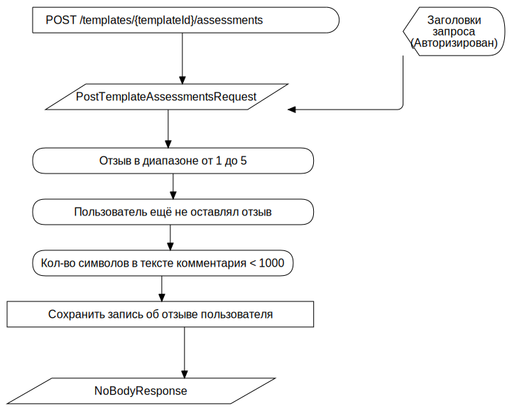

Возможность оценить шаблон (лайк/дизлайк) F
FCFlowchart
TAction
::
Use Cases
::
Diagrams
::
PUC: Kаталог
::
Оценить шаблон (Звёзды)
::
Возможность оценить шаблон (лайк/дизлайк) F
Description
none
Diagrams

Возможность оценить шаблон (лайк/дизлайк) FD
Properties
Name
Value
name
Возможность оценить шаблон (лайк/дизлайк) F
Owned Elements
Возможность оценить шаблон (лайк/дизлайк) FD
POST /templates/{templateId}/assessments
PostTemplateAssessmentsRequest
NoBodyResponse
(Terminator)
Сохранить запись об отзыве пользователя
Отзыв в диапазоне от 1 до 5
Пользователь ещё не оставлял отзыв